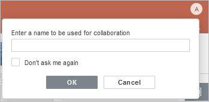

Zajedničko uređivanje prezentacija u realnom vremenu
Presentation Editor vam omogućava da održavate dosledan timski tok rada: da delite fajlove i fascikle, komunicirate direktno u editoru, komentarišete određene delove prezentacija kojima je potreban dodatni unos trećih strana, kao i da čuvate verzije prezentacije za buduću upotrebu.
U Presentation Editor-u možete sarađivati na prezentacijama u realnom vremenu koristeći dva režima: Brzo ili Strogo.
Režimi se mogu izabrati u Naprednim podešavanjima. Takođe je moguće izabrati željeni režim pomoću ikonice Režim zajedničkog uređivanja na kartici Saradnja na gornjoj traci sa alatkama:

Broj korisnika koji rade na trenutnoj prezentaciji prikazan je na desnoj strani zaglavlja editora – . Ako želite da vidite ko tačno trenutno uređuje fajl, možete kliknuti na ovu ikonicu ili otvoriti panel Ćaskanje sa kompletnom listom korisnika.
Brzi režim
Brzi režim se koristi podrazumevano i prikazuje izmene koje drugi korisnici prave u realnom vremenu. Kada zajednički uređujete prezentaciju u ovom režimu, mogućnost Ponovi poslednju poništenu radnju nije dostupna. Ovaj režim prikazuje radnje i imena saradnika. Kada više korisnika istovremeno uređuje prezentaciju u ovom režimu, izmenjeni objekti su označeni isprekidanim linijama različitih boja. Prelaskom pokazivača miša preko nekog od izmenjenih delova, prikazuje se ime korisnika koji ga u tom trenutku uređuje.
Strogi režim
Strogi režim se koristi za skrivanje izmena koje su napravili drugi korisnici dok ne kliknete na ikonicu Sačuvaj kako biste sačuvali svoje izmene i prihvatili izmene koje su napravili koautori.
Kada više korisnika istovremeno uređuje prezentaciju u Strogom režimu, izmenjeni objekti (automatski oblici, tekstualni objekti, tabele, slike, grafikoni) su označeni isprekidanim linijama različitih boja. Objekat koji vi uređujete okružen je zelenom isprekidanom linijom. Crvene isprekidane linije označavaju objekte koje uređuju drugi korisnici.
Čim jedan od korisnika sačuva svoje izmene klikom na ikonicu , ostali će u statusnoj traci videti obaveštenje da postoje nova ažuriranja. Da biste sačuvali izmene koje ste napravili kako bi ih drugi korisnici mogli videti, i da biste preuzeli izmene koje su sačuvali vaši saradnici, kliknite na ikonicu u gornjem levom uglu gornje trake sa alatkama. Ažuriranja će biti istaknuta kako biste mogli da proverite šta je tačno izmenjeno.
Režim Live Viewer
Režim Live Viewer se koristi za pregled izmena koje drugi korisnici prave u realnom vremenu kada je prezentacija otvorena od strane korisnika sa pravima pristupa Samo za pregled.
Da bi ovaj režim pravilno funkcionisao, proverite da li je u Naprednim podešavanjima editora aktivirano polje za potvrdu Prikaži izmene drugih korisnika.
Anonimni korisnici
Korisnici portala koji nisu registrovani i nemaju profil smatraju se anonimnim, iako i dalje mogu zajednički uređivati dokumente. Da bi im bilo dodeljeno ime, anonimni korisnik treba da unese željeno ime u odgovarajuće polje koje se pojavljuje u gornjem desnom uglu ekrana kada prvi put otvori dokument. Aktivirajte polje za potvrdu „Ne pitaj me ponovo“ da biste sačuvali ime.
